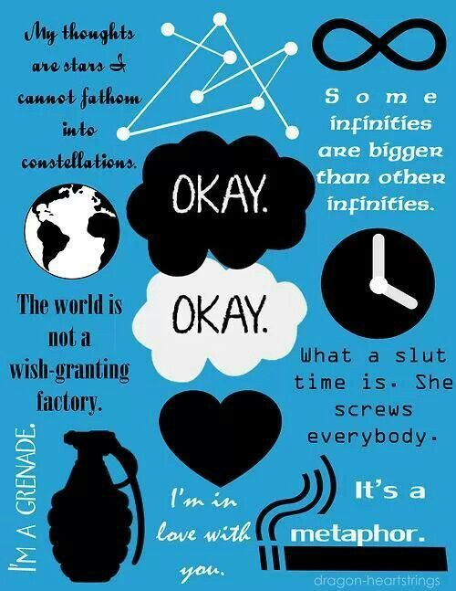

Seventeen-year-old Hazel Grace Lancaster reluctantly attends a cancer patients' support group at her mother’s behest. Because of her cancer, she uses a portable oxygen tank to breathe properly. In one of the meetings she catches the eye of a teenage boy, and through the course of the meeting she learns the boy’s name is Augustus Waters. He's there to support their mutual friend, Isaac. Isaac had a tumor in one eye that he had removed, and now he has to have his other eye taken out as well. After the meeting ends, Augustus approaches Hazel and tells her she looks like Natalie Portman in V for Vendetta. He invites Hazel to his house to watch the movie, and while hanging out, the two discuss their experiences with cancer. Hazel reveals she has thyroid cancer that has spread to her lungs. Augustus had osteosarcoma, but he is now cancer free after having his leg amputated. Before Augustus takes Hazel home, they agree to read one another’s favorite novels. Augustus gives Hazel The Price of Dawn, and Hazel recommends An Imperial Affliction. Hazel explains the magnificence of An Imperial Affliction: It is a novel about a girl named Anna who has cancer, and it's the only account she's read of living with cancer that matches her experience. She describes how the novel maddeningly ends midsentence, denying the reader closure about the fate of the novel’s characters. She speculates about the novel’s mysterious author, Peter Van Houten, who fled to Amsterdam after the novel was published and hasn’t been heard from since.
A week after Hazel and Augustus discuss the literary meaning of An Imperial Affliction, Augustus miraculously reveals he tracked down Van Houten's assistant, Lidewij, and through her he's managed to start an email correspondence with the reclusive author. He shares Van Houten's letter with Hazel, and she devises a list of questions to send Van Houten, hoping to clear up the novel’s ambiguous conclusion. Hazel is most concerned with the fate of Anna’s mother. She figures that if Anna’s mother survives her daughter’s death, then her own parents will be alright after Hazel dies. Van Houten eventually replies, saying he could only answer Hazel’s questions in person. He invites her to stop by if she is ever in Amsterdam. Shortly after Augustus invites Hazel on a picnic. It turns out he's planned an elaborate Dutch-themed picnic where he reveals that a charitable foundation that grants the wishes of kids with cancer has agreed to grant his: he's taking the two of them to Amsterdam to meet Van Houten. She is thrilled, but when he touches her face she feels hesitant for some reason. Over time she realizes that she likes him a lot, but she knows she'll hurt him when she dies. She compares herself to a grenade.

In the midst of her struggle over what to do about Augustus, Hazel suffers a serious episode in which her lungs fill with fluid and she goes to the ICU. When she is released after a period of days, she learns that Augustus never left the hospital’s waiting room. He delivers Hazel another letter from Van Houten, this one more personal and more cryptic than the last. After reading the letter, Hazel is more determined than ever to go to Amsterdam. There is a problem though: Her parents and her team of doctors don’t think Hazel is strong enough to travel. The situation seems hopeless until one of the physicians most familiar with her case, Dr. Maria, convinces Hazel’s parents that Hazel must travel because she needs to live her life.
The plans are made for Augustus, Hazel, and Hazel's mother to go to Amsterdam, but when Hazel and Augustus meet Van Houten they find that, instead of a prolific genius, he is a mean-spirited drunk who claims he cannot answer any of Hazel’s questions. The two leave Van Houten’s in utter disappointment, and accompanied by Lidewij, who feels horrified by Van Houten's behavior, they tour Anne Frank’s house. At the end of the tour, Augustus and Hazel share a romantic kiss, to the applause of spectators. They head back to the hotel where they make love for the first and only time. The following day, Augustus confesses that while Hazel was in the ICU he had a body scan which revealed his cancer has returned and spread everywhere. They return to Indianapolis, and Hazel realizes Augustus is now the grenade. As his condition worsens he is less prone to his typical charm and confidence. He becomes vulnerable and scared, but is still a beautiful boy in Hazel’s mind. As this change occurs, she ceases calling him Augustus and starts referring to him as just Gus, as his parents do. Hazel recognizes that she loves him now as much as ever. Augustus’s condition deteriorates quickly. In his final days Augustus arranges a prefuneral for himself, and Isaac and Hazel give eulogies. Hazel steals a line from Van Houten about larger and smaller infinities. She says how much she loves Augustus, and that she would not trade their short time together for anything in the world.


Augustus dies eight days later. Hazel is astonished to find Van Houten at the funeral. Van Houten explains that he and Gus maintained correspondence and that Augustus demanded Van Houten make up for ruining the trip to Amsterdam by coming to his funeral to see Hazel. Van Houten abstractly reveals the fate of Anna’s mother, but Hazel is not interested. A few days later Isaac informs Hazel that Augustus was writing something for her. He had hinted about writing a sequel to An Imperial Affliction for her, and as Hazel scrambles to locate the pages she encounters Van Houten once more. He drunkenly reveals that Anna was the name of his daughter. She died of cancer when she was eight, and An Imperial Affliction was his literary attempt at reconciling himself with her death. Hazel tells Van Houten to sober up and write another book. Eventually Hazel learns that Augustus sent the pages to Van Houten because he wanted Van Houten to use the pages to compose a well-written eulogy about Hazel. Lidewij forces Van Houten to read the pages and sends them straight off to Hazel. The novel concludes with Hazel reading Augustus’s words. He says getting hurt in this world is inevitable, but we do get to choose who we allow to hurt us, and that he his happy with his choice. He hopes she likes her choice too. The final words of the novel come from Hazel, who says she does.
John Green is a recent popular name in the American young adult fiction. He is also an avid video blogger who has published numerous educational videos online. The Fault in Our Stars is considered to be his outstanding by far along with other notables. John Michael Green was born on August 24, 1977, to Mike and Sydney Green in Indianapolis. He received his early education from Lake Highland Preparatory School and Indian Springs School. His experience of school was similar to other social outcasts who get bullied by arrogant people. He earned double graduation degrees in English and Religious Studies from Kenyon College. He worked as a student chaplain after graduation in a children’s hospital. His initial aim was to become an Episcopal priest. However, the time he spent among children with terminal-illness stimulated him to become a writer. Afterwards, he worked as a publishing assistant for Booklist, a book review journal. Green wrote numerous reviews on literary fictions mostly concerning conjoined twins or religion of Islam.